Purpose of the project
During my time interning at
Mobile Heartbeat
, I was assigned the project of creating a Work Flow feature to facilitate the use of Mobile Heartbeat's mobile application. Mobile Heartbeat is a mobile and desktop which streamlines communication between the medical staff of a hospital. This project gave me an opportunity to design an feature of an existing application from scratch while considering the many business requirements that were specified. And this whats how I presented it.
Objective
Workflow is a place where users can access information that is important to them. All of the information can also be found throughout the application, however, the goal of workflow is to consolidate content that is constantly accessed to limit distraction and noise.
😷 Assigned Patient List
Goal: To display the relevant patient’s for the user in their first page to limit the click count it takes to view patient information.
Clicking a patient card will bring the user the Patient Info screen.
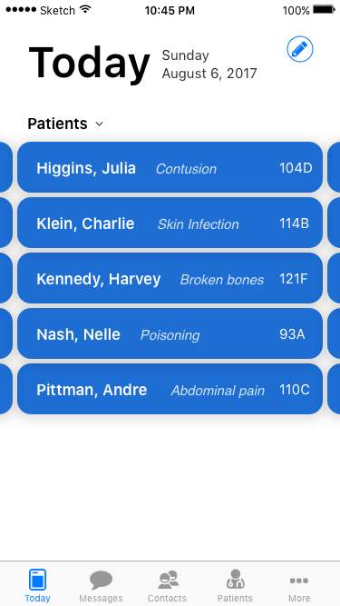
To view more patient's, scroll horizontally
📝 Personal To Do List
Goal: Give users the ability to create a to-do list for tasks that correspond to a patient.
Methods to add task
Methods to add task:
- [Today] tab. Top right corner.
- [Patient Info] screen. Top right corner.
[Today] Tab

[Patient Info] Screen
- When the button is clicked, a modal will appear allowing users to fill in details about the tasks.
- The only required field is patient and task, the rest is defaulted to “off”.
- The picker would appear if reminder field is set to “on”.
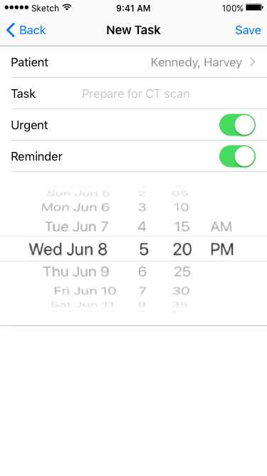
Picker pops up if "Reminder" is turned on
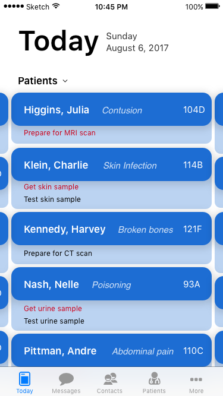
Patient list ordered based on number of tasks and urgency
- After the user saves the task, it will appear in red or black under the patient card to indicate its urgency.
- There will also be a bell icon if the user chooses to be reminded of the task at a later period.
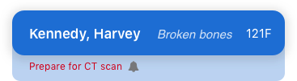
Patient with an urgent corresponding task that also has a reminder set to it.
- The patient's list can be organized based on name, bed number, or the number of tasks and urgency.
📌 Pinned For Later
Goal: Allow users to address messages at a later time by pinning and optionally setting a reminder for the message to be alerted again.
- Read Receipt: The phone arrow icon next to the contact name indicates who sent the last message and if the message was opened, the icon would be blue.
- If there is reminder set for the message, it will be indicated by a bell icon.

Out arrow = The user sent the last message. Gray phone = Bradley has not opened the message. Bell icon = Reminder has been set for the message.
Tasks can be saved by sliding the message cell to the left and clicking the “Pin for Later” button
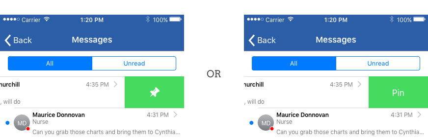
Messages can be sorted based on their time stamp or alphabetically based on recipient’s name.
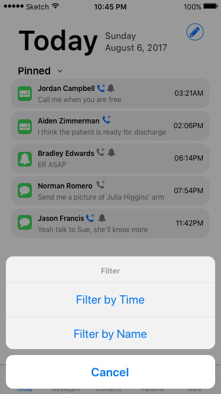
Alert
Goal: To streamline time sensitive procedures that users needs to be constantly updated.
Once an alert is created for a time sensitive procedure such as treating a stroke, the alert box will appear for all users participating in the stroke team.
- Header: Name of patient and his/her current location (doesn’t mean their room number)
- Body: Real time updates on patient’s treatment progress
- Bottom Timer: Time left to save the patient
- Plus Button: Each participating user has the ability to add an update regarding the patient’s treatment
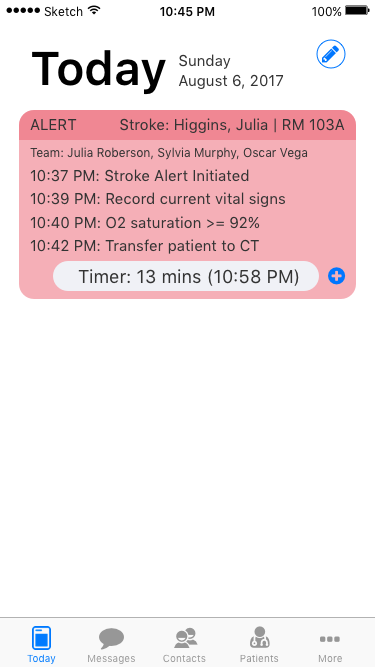
Clicking the Alert box will bring the user to a timeline of the procedure. Because these are time sensitive tasks (treating strokes), the procedure has a set process.
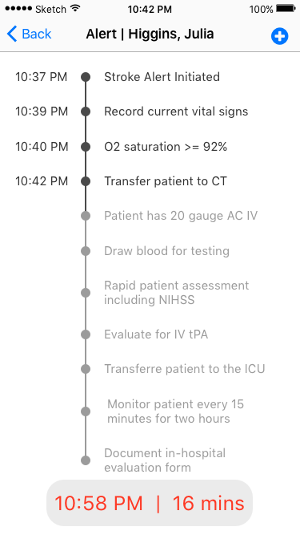
Real-time timeline of the procedure
- Clicking the Alert box will bring the user to a timeline of the procedure. Because these are time sensitive tasks (treating strokes), the procedure has a set process.
- The tasks are outlined to give the users a visual representation of how the treatment is going along.
- Once a task is done the corresponding text would appear darker and a time stamp would be displayed.
- At the bottom of the timeline, there is a read timestamp and timer which indicates the deadline for the procedure.
- Clicking the plus button on the Alerts page or on the Alerts box will bring up a modal allowing users to make updates to the treatment progress.
- Task is a required field, and Time, and Notes are optional and is set to an appropriate value.
- After clicking on tasks, the user will be brought to this screen which displays the outstanding tasks for the procedure.
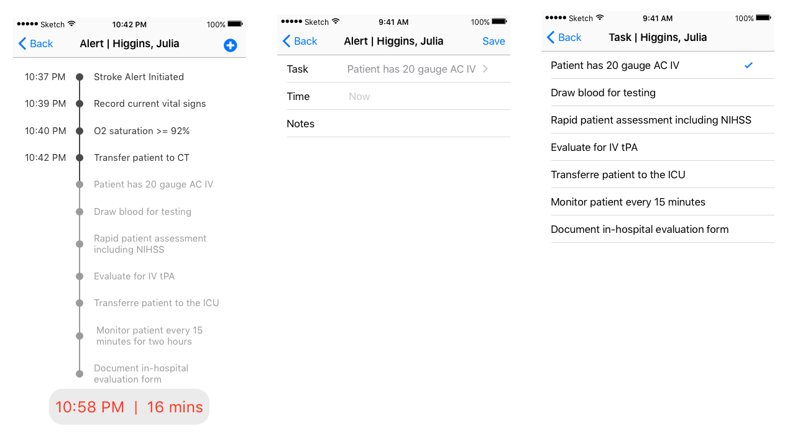
🔔 Frequent Contacts
Goal: To help facilitate communication between users, the “Frequent Contacts” feature will display relevant contact’s in the [Today] tab. This allows users to communicate with frequent contacts in 2 clicks.
- Within the contact card, users can directly message/page/call.
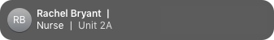
Pinning a message
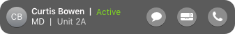
Alternative Symbole
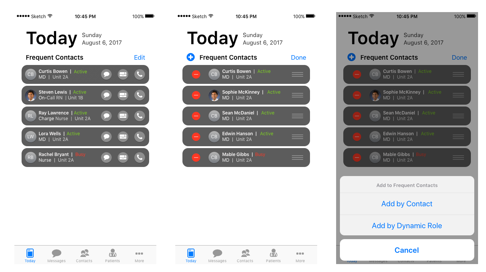
When the edit button is clicked, users can:
- Edit the order of the list
- Add/delete frequent contacts
- User can add a user to his/her Frequent Contacts list based on their name or dynamic role.
- If a contact is chosen based off of their dynamic role, the contact itself will change based on who is in that role.